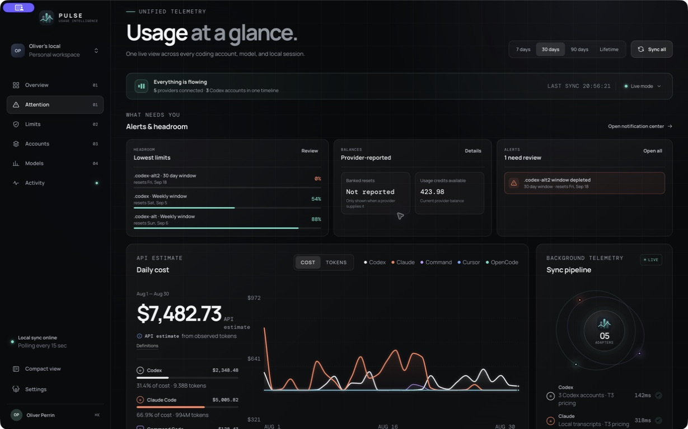

macOS first · local by design
Know your limits
before they stop the work.
Pulse brings every coding account, usage window, token, model, and API-equivalent cost into one quiet desktop utility.
No login. No cloud account. No usage data leaves your Mac.
Cost · last 30 days$7,482.73API estimate
Tokens10.42BSessions247
C1 · .codex7D · Sep 553%
C2 · .codex-alt5H / 7D · Sep 6100/88%
C3 · .codex-alt230D · Sep 180%
◎ Codex
✳ Claude Code
⌘ Command Code
◒ Cursor
↗ OpenCode
01 / PRODUCTThe full picture when you want it.
The full picture when you want it.
The essential signal when you don’t.
Full desktop workspace
The local dashboard you already know, now in a dedicated macOS window with accounts, models, history, tokens, costs, balances, and reset windows.
THE COMPLETE VIEWAlways-ready menu bar
See every account’s active limits at a glance. Open the popover for per-window reset times, warnings, balances, and sync health without opening the main window.
ONE CLICK AWAYLive local adapters
Pulse reads the same local provider state and transcript caches you already use, preserving last-good snapshots when one response arrives late.
NO NEW WORKFLOWON DEVICE127.0.0.1
CodexClaudeOpenCode
02 / LOCAL-FIRSTYour usage data stays
Your usage data stays
where your work happens.
Pulse has no cloud account, no team layer, and no remote telemetry service. It reads aggregate usage locally and stores preferences on your device.
- ✓No credentials copiedAuthentication files stay with each provider.
- ✓No cloud sync requiredThe desktop app talks to its own loopback server.
- ✓Fail-soft snapshotsPartial provider refreshes do not erase valid usage.
Keep your limits in sight.
Built first for Apple silicon. Windows and Linux follow after the macOS experience is settled.
Download Pulse 0.1macOS 15+ · Apple silicon↘ Local development preview · unsigned build